Next: Time Constraints on Speech/non-Speech Up: Energy-Based Speech/non-Speech Detector with Previous: Data Preprocessing Contents
Given the normalized and filtered energy signal (
 ) a
derivative filter is used in order to enhance the
speech/non-speech change-points. This processing helps prevent
degradation due to low signal-to-noise ratios or nonstationary
environments and was first introduced by Li et al. (2002).
Such filter is defined via the following impulse response,
) a
derivative filter is used in order to enhance the
speech/non-speech change-points. This processing helps prevent
degradation due to low signal-to-noise ratios or nonstationary
environments and was first introduced by Li et al. (2002).
Such filter is defined via the following impulse response,
| 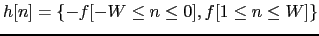 | (4.2) |
And,
| 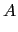 | 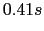 | ||
| 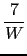 | |||
| 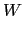 | Half of the window length. | (4.4) |
And the values of the coefficients
 , for a chosen window length
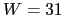. The selection of an appropriate value for the
, for a chosen window length
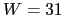. The selection of an appropriate value for the  parameter is important as it sets the temporal resolution of the
detector.
parameter is important as it sets the temporal resolution of the
detector.
As shown in fig. 4.2 the result of the convolution of
 and 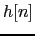,
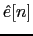 is thresholded and
labelled, each sample, as speech or non-speech.
and 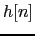,
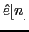 is thresholded and
labelled, each sample, as speech or non-speech.
user 2008-12-08